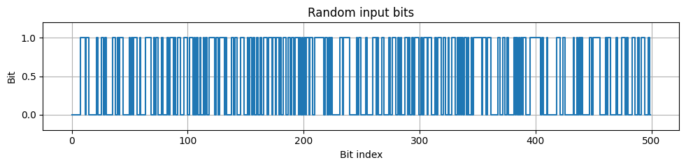
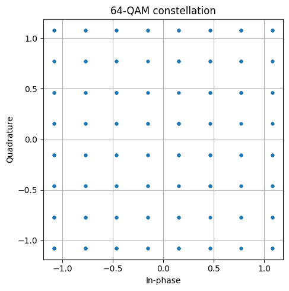
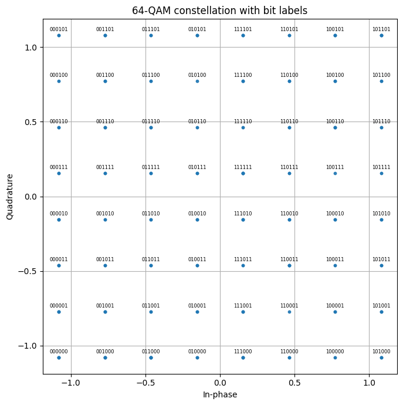
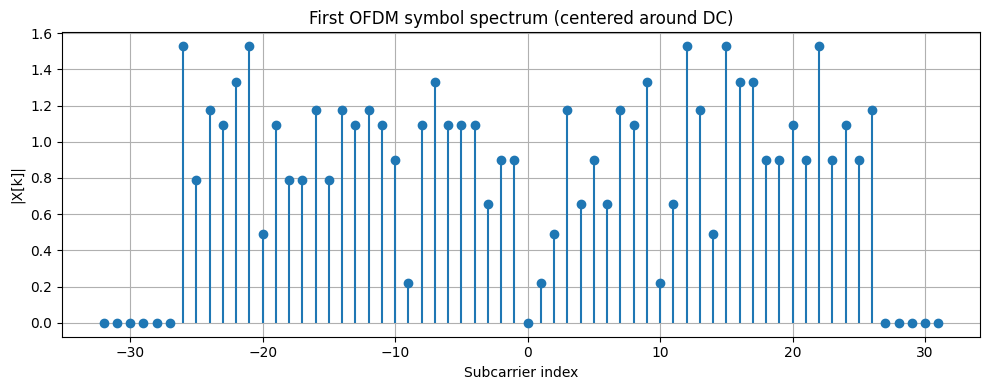
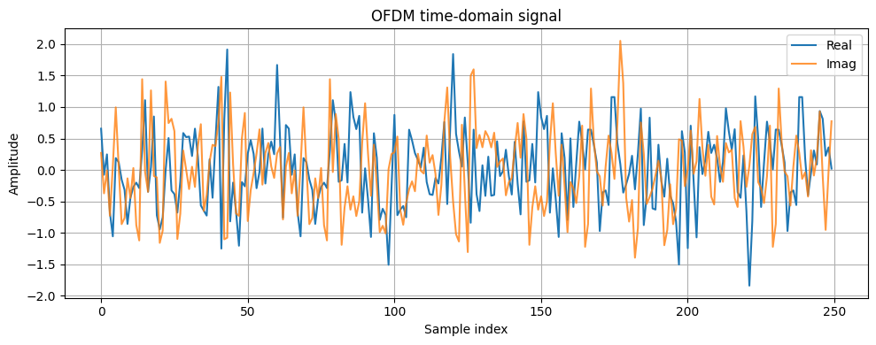
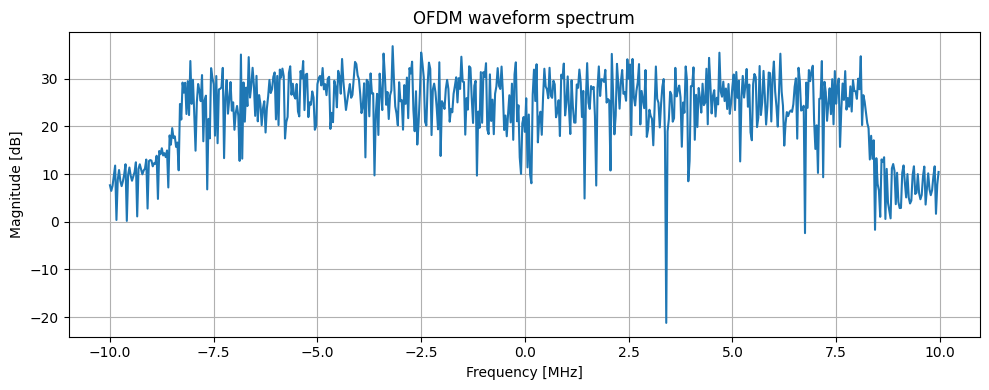
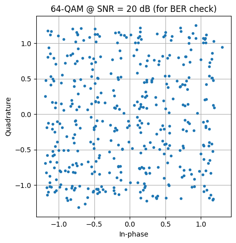

OFDM and QAM signal generation#
import numpy as np
import matplotlib.pyplot as plt
from rfmodel.core.signal import Signal
from rfmodel.comms.QAM_modulator import QAMModulator, QAMParams
from rfmodel.comms.OFDM_block import OFDMModulator, OFDMParams
from rfmodel.plot_utils import plot_constellation, plot_bits, plot_constellation_with_bits, plot_ofdm_frequency_bins_centered, plot_time_signal, plot_spectrum, reconstruct_one_ofdm_symbol_freq
from rfmodel.comms.pseudorandom_NGR import PRBSBitSource, PRBSParams

PRBS signal generation#
# --------------------------------------------------
# Parameters
# --------------------------------------------------
rng = np.random.default_rng(0)
M = 64
bits_per_symbol = int(np.log2(M))
fs_hz = 20e6
n_fft = 64
cp_len = 16
n_data_subcarriers = 52
num_ofdm_symbols = 8
n_qam_symbols_transmitted = num_ofdm_symbols * n_data_subcarriers
# --------------------------------------------------
# Generate bits (Pseudo Random)
# --------------------------------------------------
dummy_sig = Signal(x=np.array([], dtype=np.uint8), fs_hz=fs_hz, fc_hz=0.0, meta={})
prbs_gen = PRBSBitSource(
name="tx_bits",
params=PRBSParams(
order=15,
n_bits=n_qam_symbols_transmitted * bits_per_symbol,
seed=123,
),
)
sig_bits = prbs_gen.process(dummy_sig)
bits = sig_bits.x
print("Number of bits:", len(bits))
print("Expected QAM symbols:", n_qam_symbols_transmitted)
print("Bits per symbol:", bits_per_symbol)
print(sig_bits.x[:32])
print(sig_bits.meta)
plot_bits(bits, n_bits=500, title="Random input bits")
Number of bits: 2496
Expected QAM symbols: 416
Bits per symbol: 6
[0 0 0 0 0 0 0 0 1 1 1 1 0 1 1 0 0 0 0 0 0 0 1 0 0 0 1 1 0 1 0 0]
{'source': 'PRBS15', 'prbs_order': 15, 'n_bits': 2496, 'seed': 123}

QAM modulation#
# --------------------------------------------------
# QAM modulation
# --------------------------------------------------
qam = QAMModulator(
"qam1",
QAMParams(
M=M,
gray_map=True,
unit_average_power=True,
)
)
sig_qam = qam.process(sig_bits)
qam_symbols = sig_qam.x
print("Actual QAM symbols:", len(qam_symbols))
print("Average QAM symbol power:", np.mean(np.abs(qam_symbols) ** 2))
plot_constellation(qam_symbols, title="64-QAM constellation")
Actual QAM symbols: 416
Average QAM symbol power: 1.0407509157509158

plot_constellation_with_bits(
sig_qam.x,
bits=sig_bits.x,
bits_per_symbol=bits_per_symbol,
title="64-QAM constellation with bit labels",
)

Demapping QAM data to see if function works#
demap = qam.demap(qam_symbols)
(demap==sig_bits.x).all()
np.True_
OFDM#
# --------------------------------------------------
# OFDM modulation
# --------------------------------------------------
ofdm = OFDMModulator(
"ofdm1",
OFDMParams(
n_fft=n_fft,
cp_len=cp_len,
n_data_subcarriers=n_data_subcarriers,
normalize_ifft=True,
null_dc=True,
)
)
sig_ofdm = ofdm.process(sig_qam)
tx = sig_ofdm.x
print("OFDM output samples:", len(tx))
print("Expected samples:", num_ofdm_symbols * (n_fft + cp_len))
print("Average OFDM sample power:", np.mean(np.abs(tx) ** 2))
print("Active bins:", sig_ofdm.meta["active_bins"])
OFDM output samples: 640
Expected samples: 640
Average OFDM sample power: 0.853595990563677
Active bins: [38, 39, 40, 41, 42, 43, 44, 45, 46, 47, 48, 49, 50, 51, 52, 53, 54, 55, 56, 57, 58, 59, 60, 61, 62, 63, 1, 2, 3, 4, 5, 6, 7, 8, 9, 10, 11, 12, 13, 14, 15, 16, 17, 18, 19, 20, 21, 22, 23, 24, 25, 26]
sig_qam_demod = ofdm.demodulate(sig_ofdm)
plot_constellation(sig_qam_demod.x, title="64-QAM constellation")
# --------------------------------------------------
# Visualize one OFDM symbol in frequency domain
# --------------------------------------------------
qam_blocks = qam_symbols.reshape(num_ofdm_symbols, n_data_subcarriers)
first_qam_block = qam_blocks[0]
active_bins = np.array(sig_ofdm.meta["active_bins"])
Xk0 = reconstruct_one_ofdm_symbol_freq(first_qam_block, active_bins, n_fft)
plot_ofdm_frequency_bins_centered(Xk0, title="First OFDM symbol spectrum (centered around DC)")
# --------------------------------------------------
# Time-domain OFDM signal
# --------------------------------------------------
plot_time_signal(tx, n_samples=250, title="OFDM time-domain signal")
# --------------------------------------------------
# Spectrum of full OFDM waveform
# --------------------------------------------------
plot_spectrum(tx, fs_hz=fs_hz, title="OFDM waveform spectrum")



# 1. Loopback through QAM -> OFDM -> OFDM demod -> QAM demap
sig_qam_demod = ofdm.demodulate(sig_ofdm)
rx_bits = qam.demap(sig_qam_demod.x)
n = min(len(bits), len(rx_bits))
errors_clean = int(np.sum(bits[:n] != rx_bits[:n]))
print(f"[Clean loopback] errors = {errors_clean} / {n} -> BER = {errors_clean/n:.2e}")
assert errors_clean == 0, "Loopback should be bit-exact"
[Clean loopback] errors = 0 / 2496 -> BER = 0.00e+00
# 2. Add Gaussian noise at the QAM symbol level and watch BER rise
def add_awgn(syms, snr_db, rng):
sig_pw = np.mean(np.abs(syms)**2)
noise_pw = sig_pw / 10**(snr_db/10)
n = (rng.standard_normal(len(syms)) + 1j*rng.standard_normal(len(syms))) * np.sqrt(noise_pw/2)
return syms + n
snr_list = [30, 25, 20, 18, 16, 14, 12, 10]
for snr_db in snr_list:
rx_syms = add_awgn(sig_qam_demod.x, snr_db, rng)
rx_bits = qam.demap(rx_syms)
err = int(np.sum(bits[:n] != rx_bits[:n]))
print(f"SNR = {snr_db:>2} dB -> BER = {err/n:.2e} ({err} errors)")
# 3. Visual check: noisy constellation with slicer grid
rx_syms = add_awgn(sig_qam_demod.x, 20, rng)
plot_constellation(rx_syms, title="64-QAM @ SNR = 20 dB (for BER check)")
SNR = 30 dB -> BER = 0.00e+00 (0 errors)
SNR = 25 dB -> BER = 0.00e+00 (0 errors)
SNR = 20 dB -> BER = 8.01e-03 (20 errors)
SNR = 18 dB -> BER = 3.17e-02 (79 errors)
SNR = 16 dB -> BER = 5.29e-02 (132 errors)
SNR = 14 dB -> BER = 9.50e-02 (237 errors)
SNR = 12 dB -> BER = 1.29e-01 (323 errors)
SNR = 10 dB -> BER = 1.69e-01 (422 errors)
